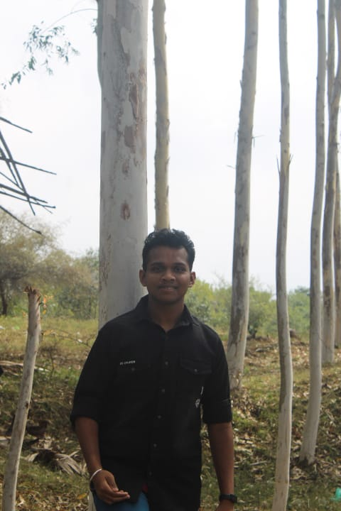

Summary
My name is Premchand Yadav, an 18-year-old B.Tech student at VIT-AP University specializing in Artificial Intelligence and Machine Learning. I’m passionate about applying technology to solve real-world problems, especially in agriculture, and have a strong interest in technology consulting.
Education
- B.Tech in Artificial Intelligence and Machine Learning, VIT-AP University (Expected Graduation: 2026)
Work Experience
- Founder, RICE - Revolutionizing Indian Cultivation and Empowerment (2024 - Present)
- Developed an AgriTech startup focused on helping farmers improve yields using technology.
- Product Development Intern, SOUL (Summer 2023)
- Worked on AI projects blending technology with personal wellness.
- Front-End Developer, PING (2022 - 2023)
- Developed user-friendly interfaces for a social messaging app.
Skills
- Programming: Python, Java, C++
- Artificial Intelligence & Machine Learning
- Front-End Development (Flutter, Flet)
- Digital Marketing
Awards & Certifications
- Certified in AI and Machine Learning by Coursera (2023)
- Recipient of the VIT-AP Scholarship for Academic Excellence (2022)
Additional Information
Hobbies
Contact Details